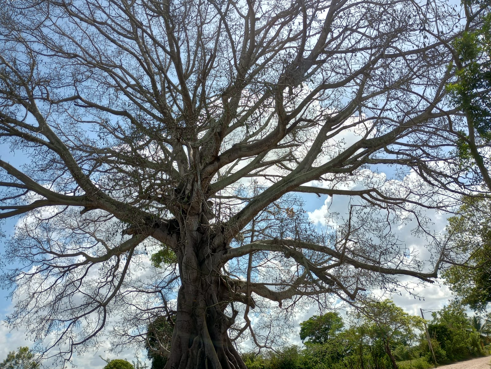
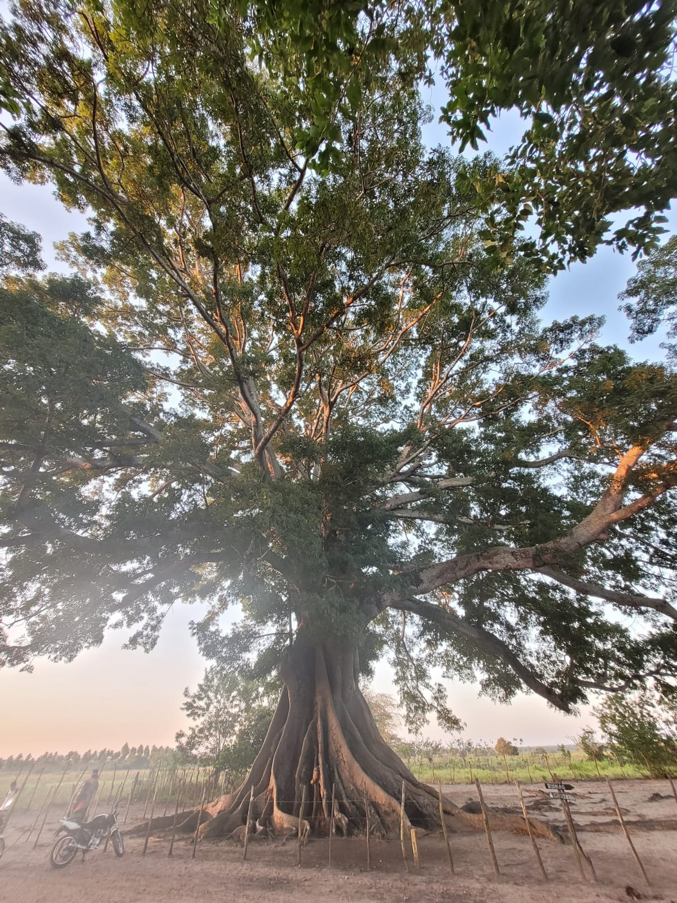
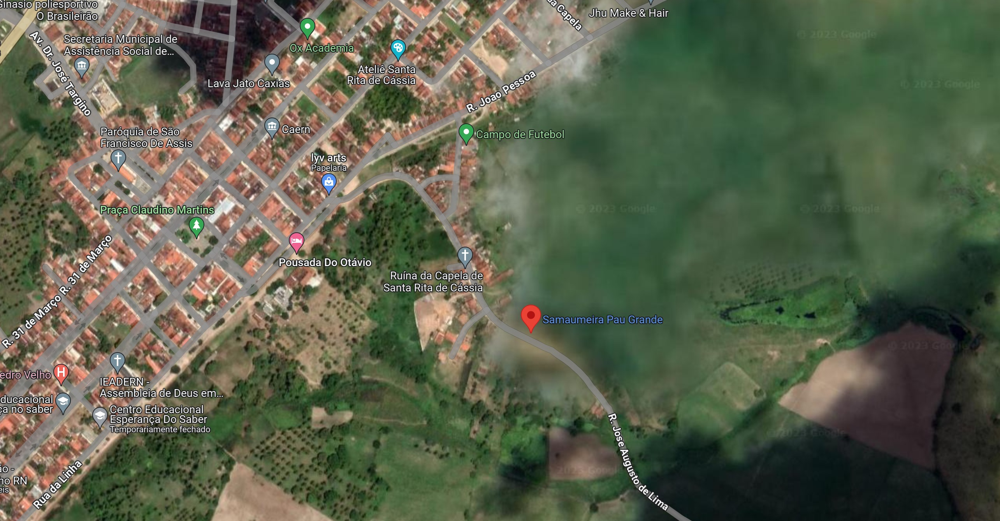

A Samaumeira de Pedro Velho
Registros fotográficos da Grande Árvore

Imagem da grande árvore

Imagem da grande árvore
 Imagem da grande árvore
Imagem da grande árvore
Vídeos da Samaumeira
Onde fica?
A Samaumeira fica localizada a aproximadamente 100km de Natal, situando-se no Município de Pedro Velho.
⬅ Página Principal